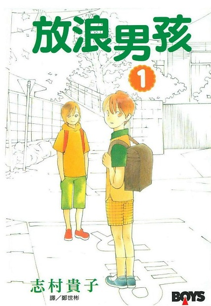

放浪贵子——志村贵子与她的漫画情感世界
清晨，我还在被窝里补觉，突然接到了志村小姐的电话，“早安，我想给一种植物画写生，我们去找找看吧，我现在在出租车上，马上就到你家了。”于是我只好马上爬起来，上网查找该植物的生长地点和行车路线……翻山涉水，好不容易到了乡下开始写生，志村小姐却开始烦躁不安起来，“这种半吊子的乡下，好讨厌！赶快回家吧！”硬是把我拉回家了。之后她不仅没觉得惭愧，还找了一堆理由掩饰。
这个超级麻烦的大妈，我却迷上她了。
因为我是M。
——石出电，女性漫画家，志村贵子的好友兼助手，“志村贵子受害者互助会”元老级会员
志村贵子有一套名为《顺其自然的生活》的短篇作品集，内容与标题完全一致，讲述了一群任性到死的家伙们的故事，充满了青年漫画各种压箱底级别的段子，NTR啊，不伦啊，当然同性恋话题更不会少。这部作品不仅可以作为志村所有漫画的注解，也可以作为志村本人生活的注解。漫画风格与作者本人的人生作风相似的作者也不少，但是作品与生活同步到志村这种程度的还是不多见。“对不起，我果然画不下去了。”“对不起，果然第一话连载40页是不可能的。”类似这样的话，很多漫画家都对编辑说过，但由志村这样坦然地说出来，总是给人一种“不愧是志村”的感觉。不必像木城雪户一样用“对不起，我的生活遭遇了很大变故，人都有是有极限的，（以下省略3000字）”这样令人唏嘘的话语来解释，一切顺其自然就好。
与洒脱的生活态度相反，志村其实是个相当高产的漫画家（不，我说的“高产”不是和洒脱之王富坚比），不仅有一大把中短篇漫画和一部7卷出道作品做底，而且还坚持同时连载两部长篇漫画（一般是一个月刊，一个双月刊，但是在写这篇文章的时候已经变成三部同时连载了），战斗力比起同为女性漫画家却讲究慢工出细活的船户明里、森薰、伊藤悠不知道要高多少级。
然而，高产归高产，说到人气，就是另一回事了。志村至今人气最高的两个作品，《蓝花》与《放浪男孩》，都属于题材比较偏门的写实向生活漫画，而这种类型在漫画史就上少有热门作品。一般来说，后宫类的写实作品（比如少年漫画杂志上的感情类民工漫画），或者纯爱向但是带有幻想色彩的作品（《水星领航员》），都比较容易炒热。实在不行，只要你有卖点，是正常BG故事，也可以吸引普通读者的关注（搞成《夏之前日》那样）。但是如果走写实路线，题材还很偏门，就无法可想了。志村的作品再热，也只能是冷门中的热门，即使动画版当季热播，讨论帖照样门可罗雀，至于蓝光熟肉就更不用想，想看的人请去AMAZON.JP或是自行前往英文GOOGLE搜索关键字……
好在志村FANS都比较狂热，可以靠热情弥补人数上的差距。中国志村fans是死扛着在各论坛盖《放浪息子》专楼，从GL大本营“山百合会”（“300”）一路开到S1（“爱撕衣”），自己搭台自己唱戏；欧美百合党是自购《manga erotics f》杂志追《蓝花》，自扫自翻自流出；日本动画业内的fans最带种，JCSTAFF赔本制作了TV版《蓝花》后，AIC接着再烧一笔钱完成了青出于蓝的TV版《放浪男孩》，虽然销量都砸穿地板掉到宽叔的大作下面去了，但是制作水准极高，俨然一副为艺术献身死得光荣的派头。这恰巧应了石出电的话——喜欢志村的人必然是M。
生为一个伟大的S，有这样一群M死心塌地的追随，这是多么光辉壮丽的王道人生。而志村的漫画，自然也是散发出遮掩不住的霸王之气。
叛逆思春期
“求求你，喜欢我。”
有个中二男生，把头发染成了绿色，人送外号小青青。有个中二女生，因为家庭问题拒绝上学，眼看家里蹲生涯就要步入第4个年头。有个冷无缺的中学老师，天天以调戏捣蛋的学生为乐。帅得惊天动地的绿发高中生本田千晓遇上了美得闭月羞花的家里蹲菊池奈奈子，加上同样帅得日月无光的中二教师兼田谦太郎，《叛逆思春期》就是关于这3个问题儿童的故事。
笔者把这部漫画翻来复去看了几遍，看的不能说不认真，理论准备不能说不充分，KINDLE的显示屏不能说不LIFE STYLE，结果看得满脸黑线。一开始以为是没看懂作者要表达的意思，后来进一步怀疑自己没看懂剧情，还感慨志村的大师范儿如何张扬，居然从剧情开始就不懂了。最后终于看懂了，发现书里写的密密麻麻都是“坑爹”二字。
《叛逆思春期》作为志村的出道作，把她S的特点表现得淋漓尽致，也因此成为她所有作品里最适合读者自虐的一部。其实本作的编剧技巧和绘画技法之类硬指标在日本漫画中属于上乘，真正要命的地方就是故事本身。以至于有人言简意赅地将本作评价为“反映了作者志村的人生观有那么点扭曲，可能对某些读者来说还不止一点的程度”。
志村本人的说法是：“这是一部只有少男少女因为心情郁闷而终日唠唠叨叨的漫画”，实在是概括得相当精准，不过其实应该再加上一句“郁闷都是他们自找的”。漫画中的角色，虽然足够任性，但是却没有任性的资本和运气，以致在生活中处处碰壁，不断吃瘪。小青青想要去当偶像，觉得太辛苦，放弃了。小青青想当布偶制作师，觉得太辛苦，放弃了。小青青想当自由职业者打零工生活，觉得太辛苦，放弃了。奈奈子想要改变家里蹲的现状，却拿不出勇气来。奈奈子想要改善和家里人的关系，却总是变成任性的胡闹。奈奈子想勾引兼田，总是失败，最后还是回到小青青身边。不光是两个主角，包括被小青青NTR的哥们，被小青青始乱终弃的女友，都难逃志村的魔爪。即使是大人，也过得并不轻松，一直像个大孩子一样生活的小青青父亲，与儿子相认后，既当不成正经的上班族，也当不成合格的父亲，活脱脱一个失败的榜样。在这部所有人都一直吃瘪的漫画中，真正游刃有余的大概也就只有兼田，与其说是他特别争气，不如说是志村对这个角色特别偏爱。
一般的生活漫画中，无论主角是怎样的个性，作者都会帮主角解决问题，要么主角自己发生改变，要么因为各种因缘际会走出困境。热血中二能拯救人类，平凡处男能大开后宫，正是所谓的造梦。而志村的漫画走的是字面意义上的“写实派路线”——生活中的事情该是怎样就是怎样，既然平时任性妄为，又怎能期望逆转困境，收获成功？角色境遇如此，读者的心情自然不会好，在每卷漫画的最后，志村都会在后记中细数本卷发生的悲剧，然后任性地提出要求，“请大家多陪陪这些任性的小鬼头。”看来她也感到读者对这些问题儿童已经忍无可忍了。如果说其他的青春漫画给读者的感觉是“那时我确实是这么想的啊！”“我要是也有这样的青春时光就好了！”，那么《叛逆思春期》就是充满了悔恨的青春涂鸦，很真实，但也很残忍。
与苦逼剧情相对应，《叛逆思春期》在技法层面上也是非常前卫的。后来成为志村贵子招牌技巧的超长倒叙在这部漫画里已经开始崭露头角，其长度和坑爹程度令人印象深刻，笔者印象中能与之相比的大概只有《I’S》中的“一贵的妄想”。而到了第7卷，技法日渐精熟的志村更是摆脱了单纯的倒叙和插叙，叙事开始带有了意识流的味道。
志村做为一个以细腻闻名的作者，感情戏的表现方式真是细腻到不能再细了，有时画面上连暗示都没有，全靠读者与角色的“心有灵犀一点通”，很多读者在第一次阅读时完全把握不住各段的感情发展方向，直到第N次阅读才做恍然大悟状。更恐怖的是，与细腻的表现方式完全错位，《叛逆思春期》中的感情发展绝对可以用“爱情龙卷风”来形容，这一页某段感情的暗示刚刚出现，下一页男女主角的对象就换人了，真正是“这样的节奏，谁都无可奈何”，与《好想急死（告诉）你》之类民工少女漫处于完全相反的另一极端。还有一点不得不提的是，志村和大部分女漫画家一样，对贞操这种男性沙文主义的工具嗤之以鼻，她的漫画中是没有处男处女这回事的，请有相关心理疾病的男性读者做好心理准备，否则看到关键情节的时候你一定会被震惊到上网通宵发帖的。
在故事最后，兼田得知已经成为社会人的小青青又把头发染回了绿色，不由得放声大笑。如果说通常的青春漫画描写的是成长，那么《叛逆思春期》描写的就是不成长。在志村看来，无法成长也是一种成长，不追求成熟本身就是一种成熟，这也就是本作的日文原名《敷居的住人》所指的状态。世上之事不如意者十之八九，“无可奈何花落去”本身就是悲剧，而无所谓花落谁家，因何而落。人们在艺术中追求合理性，但生活却并不遵循这种人为的规划。志村通过这种方式实践她的艺术理念：不是讲述故事，而是表现角色的所感所想，最大限度还原每个人在青春时代的困惑与迷茫。拜这种理念所赐，大部分读者在看漫画时一直保持着痛苦万分又不想放弃的状态，等看到结局的时候，才猛然发现自己的心境已经变得和小青青一样失落了。
Love Buzz
“你真的是不管到哪里都是一个笨蛋呢。”
如果在志村fans中举行题为“志村贵子最不适合的题材”的评选，运动漫画绝对会名列前茅。这个“不适合”当然不是指不会画人体，不会画运动场面分镜这类初级的理由，而是志村所宣扬的东西完全处在体育拼搏精神的反面。怕什么来什么，志村在《叛逆思春期》之后，紧接着创作了以女子摔角为题材的《Love Buzz》。至于结果，当然是不出所料的坑爹，如果说《叛逆思春期》还能带着怀念的心情进行回顾的话，表现社会人迷茫的《Love Buzz》对笔者这样的“败犬进行时”来说未免就太沉重了一些。这部实际上带有一定百合要素的作品，在百合论坛一直受到冷遇，可见绝对不是笔者的偏见所致。
曾经的女子摔角界新星藤薰在神秘失踪5年后突然出现在事务所里，还是像以前一样幼稚，还是像以前一样任性，不同的是，身边多了一个女儿。为了女儿绘里香，她决定重返擂台，重新开始人生。然而在曾经被她背叛的好搭档町屋百合看来，她的话根本和放屁没两样……
凡是看过《叛逆思春期》的读者，看到这样的开场，很容易就会猜出下面会发生什么。整个故事就是一连串的人生失败样板，一般运动漫画里必备的要素，什么热血啊、青春啊、同伴间的信任与羁绊啊，早都飞到半人马星座去了。至于体育漫画中常见的奇迹般的大逆转，倒还真的有，只不过变成了完全相反的样子，在故事的最高潮——藤复出的比赛上，她彻底的背叛了所有人的期待，逃离了人生这个战场。志村大妈再次将她强而有力的五指山，结结实实地抽在了每一个读者的脸上。
如果把世界上的作者分成两类，一种是把角色创作成为自己想要成为的形象，另一种则是把现实中的自己投射在角色身上，大概每个和志村搭档的助手与编辑都会毫不犹豫地认定志村属于后者。任性、软弱、永远在给别人添麻烦——这就是志村塑造的自己的形象。在志村所创作的众多短篇中，《没用的儿子》（收录于短篇集《可爱恶魔》）这个不起眼的故事在fans当中拥有特殊的人气，不少fans认为本作有很强烈的自传氛围，反映了志村不入流漫画家时代的心态。当然，《没用的儿子》主角单恋老师结果被老爸NTR这种桥段无法照搬到女性作者身上，但志村的真实的情况恐怕比那位男主角更惨。志村在短篇集《我是女生》中的编读漫画里提过这段往事——她在人生最低潮时，蹭着别人的房子，花着家里人的钱，欠着编辑的人情，画着不能说的漫画，悲惨程度能与之相比的大概只有若木民喜的“自宅警备员”生涯。而志村的懊悔之情，大概也可以参照《Love Buzz》中藤向町屋道歉的段落，“对不起，都是我的错，真的，都是我的错……”，“废话！不是你的错难道还能是我的错吗！”
不过，志村毕竟不是真正的败犬，最终还是挺过来了。所以《Love Buzz》中的藤在被教练和队友结结实实地修理了一顿后，总算是实现了自己对身边人们的诺言，重新开始了摔角选手生涯，再也不是永远徘徊在人生门槛（敷居）上的LOSER了。
《Love Buzz》与《叛逆思春期》不同，没有中文版，仔细想想倒也合情合理。其实，笔者一直很奇怪《叛逆思春期》这样的作品怎么会连载7卷还没被出版社掐死，而且居然被断头鸿（长鸿出版社）完整引进而没烂尾，难道这世界上有这么多M？之后的《放浪男孩》台版4卷就断头，《蓝花》台版比动画迟了整整2年才出现，显而易见是报应。
蓝花
“但是，我的喜欢和你的喜欢，是不一样的。”
“蓝花”一词典出德国诗人的同名作品，后来逐渐扩展为文学界的一个专有名词，代表人们所渴望的美好事物，隐含有“虽近在咫尺，却又遥不可及”的意思。用“蓝花”来形容百合之恋，无论是实际含义还是字面上的意义，都显得恰到好处。像很多女漫画家一样，志村从新人时期就对百合情有独钟，无论是《我是女生》还是《顺其自然的日子》，都有相关的短篇。在自己艺术创作的成熟期选择百合题材，又以“蓝花”为题，可以看出她对本作抱有的期望。而漫画出版后，也是意料之中的大成功。
（关于GL,LES,百合的定义众说纷纭，笔者从来就没搞懂过，所以本文就随意乱用了——实话说，虽然使用中的差异很明显，但笔者感觉并不需要人为制造这么多概念上的差异……）
如果说2002年开始的《放浪男孩》的画风还只是“够用”的话，那么《蓝花》的画风一下就达到了“荡漾”的境界。由于开始连载的时间最晚，蓝花的绘画技法明显要比志村的其他作品成熟得多（只有同期的《可爱恶魔》与之相似），虽然背景按照少女漫画的标准以简洁为主，省略背景的留白画面也比较多，但表现效果却出奇的好，无论是藤之谷还是镰仓的旅游胜地，都让读者有“一定要亲自去现场看看”的冲动。角色的美型程度也远胜以往，《叛逆思春期》中引得婴儿都色心大发的绝世美女奈奈子，漫画中的实际造型只不过相当于秋山澪的水平，而《蓝花》中则是真正的美女云集，不说京子大人和恭己王子这样的万人迷，就是相貌平平的文学少女上田，魅力和气质也远远超过其原型“吃书的妖怪”。画风好的一个意外的副产品是颜艺，《放浪男孩》中只有猫目安那才有的特技，在《蓝花》中几乎人人都玩得起，小明的颜艺更是成了漫画的招牌，被人做成了专题。
编剧技法的进步与绘画技法的进步一样大。《叛逆思春期》受到的最大的批评就是读者找不到情节线索，这其实不是因为“意识流”，而是叙事失当造成的，主线和支线混在一起，又没有合适的节奏，读起来难免让人心烦意乱。《蓝花》则完全不同，漫画是以校庆为中心安排每年度的剧情，启承转结都以藤之谷戏剧节为中心进行。虽然是个技术含量很低的做法，但是给读者的感觉相当不错。戏剧节做为每段故事的核心事件，各个角色都以最符合自己本质的形象出场，而每一段故事的主角，正好就是当年戏剧节的主演。至于志村流的倒叙，在《蓝花》中则达到了登峰造极的程度。如果说《叛逆思春期》时期叙述方式还只是控制叙事重点和交代事件因果的工具，那么到了《蓝花》中，插叙和倒叙的频繁使用已经开始带有意识流色彩。志村常常将一个完整的事件分割成不同的片段，依据角色的感情变化，逐渐展开在读者面前，使得读者的感情起伏与角色同步。虽然部分新读者在刚开始可能对志村的叙事方法稍有不适应，但很快就会感到如鱼得水，顺畅无比。
日本漫画界并不缺少百合作品，但像《蓝花》这样题材写实，又能够同时在青年男女读者之中得到好评和关注的并不多。市场上能够吸引男性读者目光的，往往都是《强袭魔女》这样男性向的YY作品，而《圣母在上》这样的女性向百合作品，其缺乏社会性的特点又使其很难得到男性的理解。现在市场上的百合新作，要么从世界观层面下手，“本作品没有雄性生物”，制造一个游离于主流社会外的二次元空间，角色得以不受干扰地发展感情。要么世界观还算写实，但是一上来所有角色就开了“百合脑”，妻非妾不娶，她非她不嫁。这类作品的泛滥，还使得男性读者群体（“百合男子”）颇为尴尬，既然作品的世界里都没有你们这些臭男人生存的空间，那你们还看什么百合呢？
志村贵子当然不可能选择那些低水平的模式，《蓝花》最大的特点就是赋予百合故事以真实感。有人可能会抗议，“现在走真实路线的百合作品并不少啊”，但很多所谓的“真实路线”，只是以现实生活为背景罢了，作品内容与现实世界中发生的事情有相当的距离。这个“真实感”的表现分两个方面，一个是故事涉及的生活是否足够全面，一个是故事中社会的气氛是否正常。不说那种纯寄宿式的女校生活，即使是校外生活比较多的作品，比如《轻声密语》，也严格限制了故事涉及的范围。像《蓝花》这样私人生活占大头的校园漫画，是非常罕见的。而社会的气氛就更难拿捏了，要体现百合在现实世界中的真实处境，就必须让故事里的角色深切感受到百合之恋的困难，至少不能让读者感到“故事的世界里只有百合一种合法恋情”，“女孩子之间搞搞百合是正常的”。换言之，真正的百合故事，是因为主角是百合女才成为百合故事，而不是因为故事发生在一个只有百合的世界里。因为两人相爱就可以永远在一起，那样美好的世界并不存在于现实中——富美在公开自己与恭己的恋情时说“请不要因此看不起我”，而被别人问起时也要犹豫再三才能苦笑着承认“因为我就是那一系的人嘛”。虽然只是通过一些细节来表现，但却足够说服读者把故事当作现实世界来看待。
富美与小明的恋情是《蓝花》真实性的最好体现。富美最初与小明重逢时，两人间并没有存在什么特殊关系。虽然“这一句话，让我们两人轻易越过了10年的岁月”，但当中又有多少是富美在失恋后想要抓住救命稻草的成分呢？直到被恭己抛弃后，富美才认真地把恋爱的目光放到矮个子的闺蜜身上。这样的分析很残忍，但却是恋爱中不容回避的现实，何况，志村把富美对小明的爱也表现得相当到位。富美的独占欲和妒忌心非常强烈，即使面对自己仰慕的恭己，也会赤裸裸地表达出不满。但她为了不伤害到小明，一直竭尽全力压抑自己的负面感情，甚至因为害怕吓到小明而不敢表现出自己的爱意，“我果然还是喜欢小明”这句话，富美犹豫再三才说出口。对于把小明拉入LES阵营，富美实际上是有负罪感的，“我总是带着自私的想法，抱着小明的温柔不放”，对于这个被广大读者骂作“鬼畜眼镜”的阴沉少女，能够这样为对方着想，难道不是她爱意之深的最好表现吗？
反过来，小明这边一开始确实只是抱着做闺蜜的想法，因为不想破坏自己与富美的朋友关系而草率应对，下意识地拉开距离，不把自己牵涉进去。后来，逐渐感受到富美热情的她，也开始为两人的关系寻找出路，“就像是回应富美的期待，那种感觉”。小明如同情窦初开的少女般，在期待与犹豫间徘徊，两人的关系也是进两步退一步。到了最后，小明终于鼓起勇气，主动表达自己的感情，“你想要吻我的话，随时可以。” 其实， BG也好，GL也好，“我只是，对于富美的事情，想要采取一些行动”，不是因为天生喜欢女生，而是因为那个女生是她。
富美与小明的恋情，虽然看似平淡，但其中的尺度非常难以把握，一旦搞得太“甜”，就会变成单纯的LOVE LOVE物语，如果过于苦逼，又会给女主角招骂。也正因为志村很好地把握了现实性与理想化间的平衡，《蓝花》才会像现在这样散发出独特的魅力。
作为一个真实系的girl meets girl的故事，《蓝花》中真正的百合系女子，只有万城目富美这个花瓶型女主角，剩下的女生，每个人都代表了女生的一个类型，而且都在不同角度与富美形成了对比。最正常的角色当然是小明，即所谓“不是我喜欢女生，而是我喜欢上的人是女生而已”。相对的，京子喜欢的是特定的人，与男女无关，但她因为实际接触过男人，抛不开的东西更多一些。恭己是典型的漫画主角，她与富美分手时说的借口“在你被甩的时候，我出现了，你和我只不过是一时冲动罢了”，说的正是她自己——她将GL作为BG的代替。千津则是现实色彩最强的一个角色，“我果然还是去不了那边”，LES在现实世界中遭遇的辛酸表露无遗。
几种完全不同类型的女人发展出的情感故事，精彩的程度丝毫不逊色于任何其他题材的生活剧，而女生感情特有的细腻与复杂也被志村完整地表现了出来。相对于衫本大魔王和鬼畜眼镜富美这种魅力四射的人物，给笔者印象最深的反而是外表平凡无奇的上田同学。第二年才出场的这个角色，总是固执地站在故事的边缘，与其他人保持着淑女之交淡如水的关系。但戏剧节时上田的激情表演，又能让人感受到她内心的炙热。直到《淡岛百景》中公开了上田的过去，读者才知道她一直经受着与恋人天各一方的痛苦煎熬，而她在图书馆中独自朗读剧本和暑假拒绝好友邀约这些伏笔，初看时只觉得别有味道，重看时则令人无限感慨。
如果抛开“百合漫画”这个标签来看，《蓝花》的定位其实有些类似日本百合文艺的始祖《花物语》，从女校生活的角度切入，进而扩展到家族与社会生活，表现女性的思想与感情。漫画的主题是女生间的感情，但京子家族的豪门恩怨，杉本四姐妹的恋爱与人生，都占据了相当的篇幅。很明显，志村没有刻意把故事限制在百合的范围内，她关注的始终是女性和青春，而不仅仅是性别意识与性取向。同理，《叛逆思春期》并不是3个人生赢家如何堕落成LOSER的故事，《放浪男孩》也不是男孩与女孩交换性别的故事。在《青蓝圆舞曲》和《少女革命》等名作都已成为古董的现在，《蓝花》的流行可谓正当其时。
漫画争议比较大的一点，是志村对于京子线的安排。京子除了前期争夺过杉本外，基本不再参与到百合线中，而是与康哥发展男女之情。很多百合党对这一点颇有微辞，认为有喧宾夺主之嫌。客观地说，漫画后期京子线的比例确实过大，不排除志村因为想不出富美X小明的感情发展，于是就拉京子来演8点档填时段。但是，这仍然是编剧技术上的问题，情节本身并没有错误，“GL剧干嘛要BG来搅局”不能构成指责志村的理由。事实上，正因为《蓝花》中有了大量其他感情的存在，百合之恋才显得更为可信，更为可贵。对蓝花中的女性来说，百合不是游戏，不是逃避，更不是温室中的幻想。富美的姐姐面对现实的压力，选择了结婚，大野的姐姐却顶住了家庭和社会的压力，与心上人共同生活。京子爱上康哥是因为青梅竹马的感情积累，而她能够爱上杉本，也证明了一见钟情并非文学家的娇柔造作。作为四姐妹的对比，杉本千惠最终还是作为一个普通的妇女度过了一生，女校时代的情窦初开，最终只是一段对死者的淡淡回忆，而姿子却与同学成就了因缘。时代，个性，机会，太多的因素影响着恋情的发展，只有能够冲破一切阻力，令两人真心相见的，才称得上“蓝花般的感情”。或许，这就是志村选定“蓝花”为题的原因吧。
番外
《蓝花》的百合故事在fans间往往引起另外一个题目，就是“作品与现实不分家”。看过放浪漫画的读者，都不会忘记后记与四格中出现的志村的助手石出电老师，她从很早时就开始与志村合作，用志村的话来说就是：“无论刮风也好下雨也好，只要我需要，石出就会跑来帮忙”。除了帮忙做家务这样的小事，连志村的稿子也是由石出与自己稿子一起带给编辑的，更不用说两人还加入了同一个同人组合。傻子也能看出石出与志村之间绝对不可能仅仅是画家和助手的关系，甚至闺蜜这种词面对她们俩的关系也显得苍白无力。在广大百合众散发出真菌气味的大脑中，两者间的关系显然已经达到了“固定CP”这样的层面，“啊啊，我的恋人啊，这次请你一定要倾听我的爱意——石出凯瑟琳！！”
按照《蓝花》的套路，就会有：
《太田出版社社报》
本社签约作者
在他社有了
同性的
恋人
干脆，你们两个，结婚吧。
放浪男孩

“我的梦想……现在还不是很清楚，真的很抱歉。”
志村早年曾经以加藤マサイチ、東京堂えるえる等名义进行过创作，但是都变成了纯粹的黑历史，也没有被单行本收录过，真正的出道作品就是广为人知的《我是女生》（1997年创作，收录在同名短篇集中），这部有着神奇世界观的作品，通篇以变性男孩与嫂子（姐夫）之间的对话为主，感情真实而细腻，表现出志村强大的故事驾驭能力和独特的视角。以此为起点，性别意识是志村始终关注的题材，而《放浪男孩》就是她对这一问题思考的集大成之作。面对自己心爱的主题，志村终于痛改前非，再也不敢像《叛逆思春期》一样玩意识流，想到哪儿滑到哪儿了。而且志村已经到了艺术家的黄金年龄，她可能不会再有第二次机会创作这样一部完整的长篇，因此，《放浪男孩》将是志村的全力一搏。
然而，《放浪男孩》却是志村贵子作品中争议最大的一部。
说是争议，其实非议都来自于新人动漫迷——很多人都是被动画的靓丽画面和劲爆声优阵容吸引过来的，不是当成萌片就是当成下限片来期待，结果看完了第一集就爆了，然后就删除视频上论坛开喷。新番播出时，网上志村fans的推荐和炒作是一波一波又一波，更新不能说不及时，帖子不能说不泛滥，但是在跟帖观众的左一句“变态”、右一句“恶心”面前，统统败下阵来。这个世界就是这样的古怪，“画个女的说她是男人”没问题，“每月拜湿吹老师”没问题，甚至不知道什么时候连BL也不分读者性别了，但严肃讨论性别意识的作品就是不行，没人买帐。
当然，这些对于志村fans来说完全不成问题，还有很多骨灰级读者因为接触了本作才跳志村贵子这个坑的。毫不夸张的说，志村通过《放浪男孩》这部作品，真正地迈入了大师级漫画家的行列。
《放浪男孩》故事的时间跨度和连载的时间长度是志村从来没有过的，称得上是一部与作者同步成长的作品。对比2002年的第一卷和现在的第12卷，最明显的就是画面的进步。早期几个主角的样子完全不美型，据说因为动画而跑去看漫画的读者中，第一卷扔书的不在少数。但是从初中篇开始，角色就突然变得靓眼起来，千叶沙织这个原本“只存在于设定上的美少女”，在第7集中魅力爆棚，成了宅男读者的大众情人。而从10卷往后，志村还有意识地将《蓝花》与《放浪男孩》的画风做了区别。后者比较接近现在的少年漫画风格，而前者的线条更细，明暗对比更少，更类似少女漫画。
为了控制漫画的叙事节奏，志村改变了过去写故事不分段落的做法，《放浪男孩》的故事以学年为单位，每学年都有一两件独立的中心事件，比如小六时修一告白事件造成的沙织与众人关系的破裂，而初二时修一与安那的交往，又引发了沙织与佳乃关系的转折。另外，与《蓝花》一样，校庆也是《放浪男孩》中的重要组成，区别在于前者借由戏剧节的表演使角色达到戏内戏外感情的统一，后者的校庆只是单纯的标志事件。
为了强化故事感染力，志村还不断改进描写心理活动的手法。在漫画前期，两个主人公都有大量心理描写，虽然不会像濑户一贵那样自己开脑内剧场，但连续好几格的内心独白并不少见。到了初中以后，志村就开始有意识地丰富心理细节的表现方式，即使是在安那家里换装这么重要的时刻，修一也只有淡淡的一句“可是我也不能去女子高中啊……”，与之相配的画面则是修一寂寞的背影，一张图胜过千言万语。有时，仅仅是别人的一句话引出的修一的某个表情，就能让读者完全了解修一现在的心情，感染力和说服力远超过去的大段独白。
志村流的标志手法——在叙事中大量使用倒叙和插叙——在《放浪男孩》中进一步发扬光大，而且其技巧已经达到了舍我其谁的境界。“在事件展开的时候直接跳到事后，再用回忆还原现场”是其中的经典用法，往往是一件事已经结束了，后遗症都处理得差不多了，志村才倒回去叙述事件的高潮，曝出一个又一个黑历史，整得读者措手不及。这当中大部分都是出于强化表现力的需要，但是也难免混杂有“作者的恶意”。
作品间的关联性是志村的另一大趣味，往往看似随意的NETA，背后却另有曲折。最广为人知的客串是兼田老师，在《叛逆思春期》和《放浪男孩》中都做为女主角的暗恋对象而存在，虽然出场颇多，但是和前作却没有任何互动。作为唤醒佳乃少女意识的重要角色，兼田的位置其实可以由任何一个帅哥老师代替，而志村让兼田上场的最大原因，恐怕还是广告。君不见一堆新人志村信者跑去考古，然后被《叛逆思春期》折磨得嗷嗷乱叫，甚至最近《叛逆思春期》还出了新装版，广告效果之好无庸置疑。
从设定来看，《放浪男孩》是4部长篇中最写实的，故事的舞台设定在普通人家与普通学校，角色无论出身，能力，相貌，都属中流（大概只有千叶突出一点），与重点加贵族的松岗和藤之谷完全不能比。在这种朴素的背景下，既要保证情节的合理性，又要制造足够的戏剧冲突，而且还不能像《叛逆思春期》那样情节发展随心所欲不分重点，这对志村的编剧能力是一个考验。志村经过权衡，采取了感情戏和成长故事各占一半的模式，成长构成主干，感情充实故事。
二鸟修一作为漫画的主人公，他的成长经历承载了志村对性别问题的思考。相比现在流行的伪娘漫主角，二鸟修一的性格更平和，更少张扬，感情逻辑也更接近常人。志村在不破坏漫画原本生活化氛围的前提下，给修一的女装话题投入了足够的笔墨，尤其是修一的心理表现得恰到好处，“我觉得我更适合女装，难道这样的想法只是我的一厢情愿吗？”
修一虽然从内到外都是女人，但他的性格可是相当有男子气概。修一对变性这件事的坚定程度，是其他漫画主人公望尘莫及的，初二时的女装事件震惊全校，也让一直对他冷嘲热讽的姐姐没了脾气。安娜也是潜意识中感受到修一的男子气概，才死心塌地地跟着修一。
但女装事件造成的冲击，仍然完全出乎修一的意料。比起周围人们的嘲笑和责备，佳乃没有受到指责这点给他的打击更大，“只有我被嘲笑了”。之前不愿认真面对的社会现实，一下子摆在修一的面前，当朋友们被暗恋、告白、单恋这些正常人的烦恼所困扰时，修一却要直面对社会的压力。幸好，修一还有亲人和朋友可以帮助他走出困境，而对他支持最大的则是作为长辈的父亲和小雪。父亲只是轻轻地说“是不是神搞错了呢，修一和姐姐的性别”，就化解了家庭的危机。小雪虽然一开始只是玩笑似的接近颠倒情侣，后来却一直是修一的精神支柱，“那我姑且先收下你这句话”。最可贵的是，小雪并没有滥用修一的信任，在修一要求去店里打工的时候，她坚决拒绝了，就算因此被他所怨恨也无所谓。
靠着大家的支持，修一从初二的低潮爬了上来，也开始仔细审视自己的人生。无论是女装应征打工，还是要求去夜店工作，都说明了修一仍然希望得到他人的认可，希望女装的自己可以作为社会的一分子存在。对于社会常识压力与自己感情冲动间的矛盾，修一是深有体会的，他既不像小千一样把别人的看法当作空气，也不像沙织一样否定周围的一切，而是有坦然面对现实的勇气。
修一能在自己理想的道路上前进多远，既是志村此作的最大悬念，也是读者追番的动力所在。无论是小美爸爸的变装生活，还是小雪在遇到阿椎之前的人生，都向我们暗示了修一此后的道路绝对不会平坦。而修一友人们的平凡生活，又无时无刻不在提醒读者们，修一所付出的代价有多么沉重。
修一坚持自己的选择，与小雪一样走上变性的道路，固然是悲剧，反过来，如果修一随着年龄增长，屈服于社会的压力，成为周围人眼中的“正常”男生，这就不是悲剧了吗？对修一来说，无论他作何选择，人生都还有太长的路要走。
主题之外，在故事中面对成长烦恼的不只修一一人。小千因为爱热闹的性格成为了朋友圈的中心，但却疏远了她最好的朋友桃桃。土居虽然对修一有好感，但又总是采取恶意捉弄这样的表达方式，导致两人关系恶化。安那作为一个情感无能的少女明星，始终无法掌握修一在自己心中的定位，她这种模棱两可的态度，险些在修一困难时把他推进深渊。而真穗也一直为自己恶劣的性格而苦恼，虽然她对弟弟的爱并不输给父母，却从来无法恰当地表达出来。
同样是自我中心主义，与周围人关系紧张的沙织，不仅在自己周围掀起风暴，还经常害修一碰得头破血流。在沙织心中，修一是自己人生梦想的投影，永远是与众不同的，但拉开距离后，她终于发现修一“虽然很可爱，但就像个普通的男孩子”。于是，沙织选择了与世界和解，从一个看上去像是要搞师生恋的危险美少女，变成了精英学校里的万人迷。而她选定的中介，则是佳乃。
“沙织X佳乃”是《放浪男孩》中最精彩的一段感情关系。这段神来之笔既是志村艺术灵感的总爆发，也是她编剧能力的巅峰。最早，两人还仅仅是围绕修一的情敌关系，但在修一移情安那之后，两人的关系却迅速解冻。过去横在沙织和佳乃间的敌对关系，反而成了两人脱不开的羁绊，虽然嘴上说着“我讨厌你”，但内心却总是忍不住去关注对方。在校园的青涩故事中，这种经典的“由恨生爱”桥段并不鲜见，但能够像志村这样将感情变化安排得细致合理的则屈指可数。
在百合党眼里，沙织与佳乃感情的重要性是如何抬高也不为过的，如果这样发展下去，当然就是皆大欢喜。但志村笔锋一转，把教堂少爷扶正了，彻底搅乱了百合党人的梦想。而且志村的S人格也借机爆发，沙织被教堂少爷追到手这种令人哭天抢地的悲剧，居然藏了将近一单行本才曝出来， FANS们简直搞不清自己看的是《放浪男孩》还是《叛逆思春期》了。
其实，换到沙织的立场上看，这样的结果是很自然的。对于沙织来说，爱是不需要理由的，喜欢一个人，可以脱离性别，可以不顾身份。但沙织的爱并不是无偿的，从小把自己孤立在人群之外的她，最不能忍受的就是自己的爱得不到回应，既然修一一心要赶她走，佳乃坚持LJBF，那她只能投向少爷的怀抱。
不过，无疾而终也好，轰轰烈烈的分手也好，坚强的沙织应该都能自己走过吧。反倒是漫画的原定CP，从一开始就让人揪心不止。
作为《放浪男孩》的第一情侣，修一与佳乃，一个男扮女装，一个女扮男装，才子佳人，俊男靓女，似乎是不可拆散的完美组合，但这对众人眼中的天做之合，却在人生的道路上渐行渐远，最终形同陌路，
修一对佳乃的迷恋当然无可怀疑，可以说，佳乃是他除了女装之外，在这个世界上唯一重视的东西。因此他对于迷恋他的其他女人，会毫不犹豫地泼冷水出去，如果说对沙织的讽刺还属于年纪小不懂事，讽刺安娜时就有故意的成分了。对他来说，维持一段自己不感兴趣的感情，就跟假装自己不想女装一样，都是虚伪的和没有必要的，至于沙织如何哭得雨打梨花，跟他有一毛钱关系吗？
作为对应，佳乃对于修一的热忱则是毫不领情，而且对他非常残忍。修一家里蹲时，沙织是第一个来找他的，之后朋友们陆续来鼓励他，佳乃却只写了封推卸责任的信。修一在学校受排挤的时候，佳乃也只在想自己被男生告白的事情。修一直到最后才明白，佳乃除了和他一样想变成异性外，两人根本毫无共通之处，之前找到命中注定伴侣的那种兴奋，只是他一厢情愿的误会罢了。
修一与佳乃的分手，折射出的是两人截然不同的人生态度。某种程度上，志村将做为女主角的佳乃设定为男主角修一的反面。同样面对外界的压力，修一有胆量穿着女装去应聘，佳乃却宁愿退守自己的衣柜。她会为男生的第一次告白而脸红心跳，会因为小雪表现出男人的一面而害怕，就如同沙织所批评的，“只不过是看起来像男生的女生而已”。她反抗社会规范，实现自我价值的方式，仅仅是不在校服上系领结而已，卑微得不可言语。而当兼田老师唤醒了佳乃的女性意识后，连她自己也放弃了对男性身份的追求，因此，佳乃与沙织之间的关系，永远止步于闺蜜，而修一在结交安娜之后，却从来没有质疑过自己的选择。
得知修一向佳乃告白失败，小雪说“果然还是太早了一点”。其实，有些恋情纵有再多时日也不会成功。沙织可以从一而终地支持修一的女装，但佳乃却不会容许自己有一个另类男友。佳乃寻求的不过是平凡女人的幸福，她无法也不愿分担修一沉重的人生，既然无法在人生道路上并肩前行，那么分手对两人来说是最好的选择。最终，修一对佳乃曾经的爱意，与佳乃送给他的戒指一起被收藏到了首饰盒中。钱钟书在《谈艺录》中论及《红楼梦》时曾说过这样一段话：木石因缘，侥幸成就，喜将变忧，佳耦始者或以怨耦终，遥闻声而相思相慕，习进前而渐疏渐厌，花红初无几日，月满不得连宵，好事徒成虚话，含饴还同嚼蜡。宝黛良缘虽就，而好逑渐至寇仇，冤家终为怨耦，方是悲剧之悲剧。
这样的故事，令人不禁想起王家卫的《春光乍泄》——张国荣只会凝视灯罩上的瀑布照片，而梁朝伟却毅然前往真正的瀑布。
“兜兜转转行了很多冤枉路，我终于来到伊瓜苏瀑布，但我好难过，因为我始终都觉得，在这瀑布下面，应该有两个人。”
动画版
“哎呀，真是稀罕的组合。”
对于如何评价现在的日本动画市场，动漫迷的意见从来就没有统一过。从作品平均艺术水平看，与90年代所谓的低潮期相比进步有限，很多怀古厨可能还觉得垃圾更多了。从市场规模和作品数量看，市场又处于前所未有的活跃期。但是，必须指出，如果不是动画市场极度膨胀，业界对原作的需求非常强烈，志村贵子这种作者的作品无论如何是不可能改编成TV动画的。过去所谓的动画黄金期，改编基本不会考虑艺术水平高作品风格正常的作者，被动画化的都是风格极端小众的高水平漫画（OVA化）和广大民工漫画（TV化）。所以，志村贵子和志村的FANS们，都是这个奇怪时代的受惠者。
《蓝花》能够搬上荧屏，动画制作方J.C.STAFF是付出了相当勇气的，而他们的认真也在动画版中得到了充分体现。清淡的美术风格与题材非常符合，制作质量也很稳定，剧情高度忠实原作，很多漫画的小细节都得到了再现，原创的细节也很合理。虽然由于后期剧情安排问题对事件做了一定的删减，但基本不会刺激到原作粉。最终动画版以其极高的制作水准在业界广受好评，也斩获了不少奖项，对当时废萌和肉片乱飞的TV市场来说如同一阵清风。
不过，动画版还是留下了一些遗憾。最明显的两点，一是节奏较慢，明显有拖时间的情况，二是小明和富美确定恋人关系的剧情有些草率。坊间一般都认为J.C.STAFF有乱改原作剧情的习惯，但是《蓝花》出现问题的原因并不在此，真正的原因是动画化的时机过早。原作中富美和小明关系的发展方向虽然早就被志村定下，但是在动画制作时漫画只连载到富美和学姐分手，富美和小明的部分还没有连载到。当时的漫画剧情大约能支撑8集动画，硬要撑到一季长度的结果就是拉长时间。而为了给动画的剧情收尾，又把两人确定关系的过程做了一定了压缩，导致感情发展过程不如原作自然。
如果动画晚出一年，完全可以照抄漫画中富美和小明间的感情发展过程，故事内容会充实很多，结尾也不会显得生硬。而由于二年生的出现，可写的故事会一下子多很多，不至于像现在这样加入大量细节撑时间。换一个角度看，动画的遗憾也可以从反面证明蓝花的魅力之大——动画人甚至都不能再多等一年，而一定要尽快把故事搬上电视。
对有志于改变志村作品的其他动画人来说，《蓝花》的失误是一个很及时的教训，所以之后的《放浪男孩》，无论FANS如何热情，AIC坚持要等到漫画连载到第10卷，剧情告一段落才开始制作动画。
相比J.C.STAFF中规中矩的改编思路，AIC制作的《放浪男孩》动画版可是尽显志村贵子“真饭”风采。对这部市场不被看好的冷门作品，AIC简直是拼尽了全力。除了百搭编剧冈田麿里，还招来了《食灵零》的导演青木荣（大概是觉得百合动画的导演适合百合漫画家的作品吧），冈田的情况不知道，但是从动画的表现来看，青木肯定已经变成志村FAN了。《放浪男孩》动画版最引人注目的就是与原作风格极为相似的水彩画风，为了实现这样的美丽画面，制作组花了整整一年进行技术研究，最后的成功超过所有人的想象。与《蓝花》时清淡的赛璐珞对比，《放浪男孩》TV版的水彩风格绝对称得上是革命性的进步，不仅效果前所未见，而且工艺也并不复杂，具有大范围推广的潜力。作为对比，志村还专门为动画版绘制了新封面，手绘封面与数码封面放在一起，难分伯仲。动画版在配音也是下了大本钱，除了两位主角因为年龄对应的关系采用了新人声优，其他角色均是一线声优，效果非常理想。（实际上《蓝花》也是差不多的情况，主角启用偶像艺人，配角则是一线声优）
因为集数的关系，《放浪男孩》动画版只截取了原作初一到初二这个时间段中的情节，作为人际关系起点的小学部分被割爱了，只是通过插叙在前两话回溯了小学时期众人的关系。志村在制作会议上曾经很强烈地反对这个方案（因为小学有千叶推倒修一等几个高潮大戏，对塑造角色形象非常重要），最后被青木说的没办法了，“顺其自然吧”。但是当志村看到冈田的剧本后，态度又有了180度的转变，“哎呀，当时要是我也采用这个方式的话……”。
除了时间范围变窄外，放浪的动画还删除了大量与主要角色无关的支线情节，甚至有的配角的戏份基本被删干净了，节省出来的时间被用于完善原作的细节和丰富主要角色形象。采取这样的处理方法是有原因的。志村习惯于在情节中大量留白，让读者自己靠常识和后续情节的轻微暗示去完善，这样的方法在漫画中很常见，但是放到动画中就难说合理了。于是，编剧特意补充了大量细节，以保证事件逻辑的连贯。比如安娜送给修一的手机挂链，在漫画里虽然有前因，却没有后果，而在动画中，冈田特意设计了两人去卡拉OK店了解挂链来历这个细节，相比原作就更为自然一些。
另外，志村招牌式的倒叙与插叙也颇令改编者头疼，动画毕竟不是漫画，观众在连不上情节的时候，不可能倒回几分钟去看前面的情节。因此编剧对于分散在几段情节中的一段连续的感情变化，都集中到一段情节来表现，穿插的次要情节果断删掉，如此一来，情节的合理性和完整性都要超过原作，人际关系的变化在逻辑上也相对合理。总的来说，漫画的表现手法给读者更多的想象空间，动画版的处理方式则适合更多观众，同时也不乏亮点。当然也有的地方是用力过度了，比如第3集，删除税所老师的妄想后空出了大段的情节，冈田把这些空档全用来描写修一和佳乃之间的关系，甚至原本沙织的戏份都让给佳乃了，令fans颇为不爽。
说起来，沙织是动画版最大的受害者。这个角色在动画中给观众的印象是有点中二的愤怒少女，尤其以第二集为甚，虽然后期沙织的形象慢慢丰满起来，但这个先入为主的印象影响了动画观众对沙织的评价。而在原作中，沙织的角色是有一个变化路线的：神秘美少女——中二少女——冷感美人。志村在小学篇着重表现了沙织对修一的痴情，使她博得了很多读者的喜爱，而动画完全删了个干净，动画观众觉得这个角色难以亲近纯属多余，漫画观众觉得动画毁掉了沙织的形象，两头不讨好。做为补偿，动画给沙织增加了几场重量级原创戏，其中特别值得一提的是第4集末尾沙织的祈祷，少女的忧伤慢慢融化在ED的钢琴伴奏中，演出效果完美得令人难以置信，绝对称得上是超越原作的神来之笔。
正是因为放浪动画水准如此之高，它在商业上的失败才显得格外触目惊心。做为FANS，完全想不到理由能够解释这样一部画面精美，制作用心，剧情改编毫无破绽的杰作为何会落得这个下场，虽然《蓝花》和《放浪男孩》这种“艺术向”作品在业界能够引起轰动，但志村贵子作品在市场上的连续两次失败，不能不让人为日本动画业未来的走向担心。这种时候，《IS》那个“名作之壁”的绰号，就显得格外残忍了——一个要什么没什么的三流纯水肉片，销量超过放浪十倍以上！
千言万语，化为一句话——“动画只要能够突破下限就不会死，你们为什么就是不明白！”